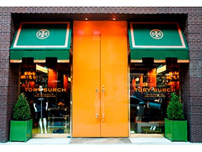
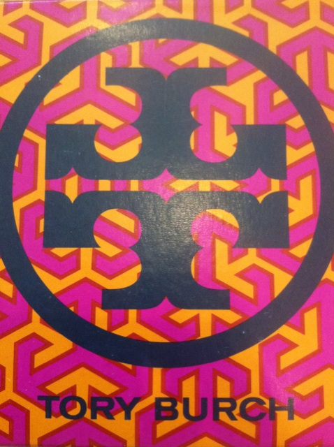

홈 > 브랜드 매거진 > 토리 버치
토리 버치
토리 버치(Tory Burch)는 2004년 디자이너 토리 버치가 설립한 미국 패션 브랜드이다.
산업 분야 패션·럭셔리 · 공개 등급 자료 기반 · 브랜드 평가 4.3 ★


한눈에 보는 브랜드
토리 버치는 디자이너 토리 버치가 2004년 2월 미국 뉴욕 맨해튼 놀리타에 첫 매장을 열며 시작한 액세서리·패션 하우스다. 당시 남편 크리스 버치와 함께 약 20억원 규모 자본으로 출발했고 개장 첫날 재고 대부분이 팔렸다.
2005년 오프라 윈프리의 방송 추천으로 폭발적 인지도를 얻은 것이 첫 전환점, 2008년 밀러 샌들 출시로 신발 카테고리를 대표 사업으로 키운 것이 두 번째 전환점이다. 현재 전 세계 400여 개 매장과 3,000여 개 도매 거점을 갖춘 글로벌 브랜드로 성장했다.
브랜드 관점
한국 독자가 주목할 지점은 토리 버치가 코치, 케이트 스페이드, 마이클 코어스와 같은 어프로처블 럭셔리 군에 속하면서도 가격이 아니라 미감으로 자리를 벌렸다는 사실이다. 마이클 코어스가 더 낮은 진입가로 대중성을 노린다면 토리 버치는 보헤미안 무드와 프레피 감성을 섞은 룩, 무게감 있는 메탈 하드웨어, 선명한 컬러로 한 단계 위 가격대를 정당화한다.
최근 변화의 핵심은 디자인 방향의 고급화다. 2025년에는 뉴욕 현대미술관 등 미술관을 런웨이 무대로 삼고 건축적 재단과 정제된 팔레트를 내세워 액세서리 브랜드에서 토털 패션 하우스로 위상을 재정의하고 있다.
한국에서도 동일한 흐름이 읽힌다. 초기 가방·플랫슈즈 중심이던 매출에서 의류 비중이 10%대에서 30%까지 늘며 라이프스타일 영역으로 외연을 넓히는 중이다.
가성비가 아닌 디자인 서사로 차별화하는 전략이 핵심 함의다.
시작과 성장
2000년대 초반 미국 패션 시장은 고가 디자이너 하우스와 저가 대중 브랜드 사이의 빈 공간이 컸다. 토리 버치는 이 틈을 겨냥해 2004년 2월 놀리타에 매장을 열고 라벨을 출범시켰는데, 초기 명칭은 TRB 바이 토리 버치였다.
본인과 당시 남편 크리스 버치가 약 20억원을 모아 시작했고 추가 투자를 유치했다. 첫 전환점은 2005년 4월 오프라 윈프리의 방송 언급으로, 다음 날 웹사이트에 수백만 건의 접속이 몰리며 단숨에 전국적 브랜드로 도약했다.
두 번째 전환점은 시그니처 신발의 성공이다. 어머니 이름을 딴 레바 발레 플랫이 2006년 데뷔했고, 모로코·카프리에서 영감을 얻은 밀러 샌들이 2008년 출시되며 신발이 핵심 수익원으로 자리 잡았다.
2009년에는 여성 기업가를 지원하는 토리 버치 재단을 설립했고 같은 해 한국 시장에도 진출했다. 국제 확장은 백화점·전문점 도매망과 직영 매장의 병행으로 이어져, 2025년 기준 전 세계 400여 개 매장 체제를 구축했다.
브랜드 아이덴티티
브랜드의 핵심 가치는 보헤미안 럭셔리와 프레피 감성의 결합이다. 비주얼 아이덴티티의 중심에는 두 개의 T를 위아래로 겹쳐 만든 더블 T 로고가 있는데, 토리 버치가 약 200개 시안 중 직접 고른 디자인으로 모로코 건축에서 영감을 받았다.
이 메탈 메달리온은 가방, 신발, 주얼리에 일관되게 새겨져 멀리서도 브랜드를 알아보게 한다. 타깃은 디자이너 하우스의 과도한 가격은 부담스러우나 정제된 디자인과 색감을 원하는 20대 후반에서 40대 여성층이다.
보이스는 낙관적이고 활기차며 여성의 경제적 자립과 자신감을 응원하는 메시지를 일관되게 전한다.
제품과 서비스
카테고리는 가방, 신발, 의류, 주얼리, 향수로 확장돼 있다. 시그니처는 2006년 레바 발레 플랫과 2008년 밀러 샌들이며, 더블 T 메달리온 핸드백 라인도 대표 상품이다.
가격대는 핸드백이 약 198달러부터, 레바 트래블 발레가 약 225달러, 밀러 샌들이 모델에 따라 약 98달러에서 275달러 선이다. 채널은 직영 매장, 공식 온라인몰, 주요 백화점과 전문점 도매망을 함께 운영한다.
현재 상태
본사는 미국 뉴욕에 있다. 모회사 없이 창업자가 지배하는 비상장 가족기업으로, 2018년 소수 지분을 되사 독립 소유 구조를 확립했다.
최고경영자는 2019년 부임한 피에르이브 루셀이며 토리 버치는 이그제큐티브 체어맨 겸 최고크리에이티브책임자를 맡는다. 임직원은 약 5천 명 규모다.
매장은 2025년 기준 전 세계 약 400개, 도매 거점은 3천여 곳이다. 진출 국가 수는 미공개.
2024년 매출은 약 18억 달러로 알려져 있다. 한국에서는 삼성물산 패션부문이 라이선스로 전개하며 2009년 9월 론칭했고 롯데·현대·신세계·갤러리아 등 주요 백화점에 입점해 있다.
타임라인
정리된 연도형 이벤트가 없습니다.
BI/CI 변천사
함께 읽을 브랜드
 패션·럭셔리 · 매거진 완성코치
패션·럭셔리 · 매거진 완성코치코치는 실용적 가죽 제품을 일상적 럭셔리의 영역으로 끌어올린 브랜드다. 과시적 명품보다 접근 가능한 품질과 라이프스타일 이미지를 통해 오래 쓰는 가방의 감각을 브랜드...
 패션·럭셔리 · 편집 검수샤넬
패션·럭셔리 · 편집 검수샤넬샤넬은 패션을 장식이 아니라 태도와 해방의 언어로 바꾼 브랜드다. 브랜드의 힘은 제품의 고급스러움뿐 아니라 여성의 몸과 생활 방식을 새롭게 해석한 상징성에서 나온다.
 패션·럭셔리 · 편집 검수디젤
패션·럭셔리 · 편집 검수디젤디젤(Diesel)은 1978년 렌조 로소가 이탈리아 브레간체에서 설립한 데님 중심의 컨템포러리 패션 브랜드다. 도발적이고 실험적인 디자인으로 데님 헤리티지를 재해석...
 패션·럭셔리 · 매거진 완성루이비통
패션·럭셔리 · 매거진 완성루이비통루이비통은 여행가방에서 출발했지만, 이동의 기능을 럭셔리한 삶의 상징으로 확장했다. 브랜드의 헤리티지는 물건을 담는 도구가 아니라 이동하는 사람의 취향과 지위를 표현...
 패션·럭셔리 · 편집 검수구찌
패션·럭셔리 · 편집 검수구찌구찌는 이탈리아의 패션·럭셔리 브랜드로, 소재, 실루엣, 로고, 컬렉션 운영이 취향과 지위 신호를 만드는 영역입니다.
 패션·럭셔리 · 편집 검수랄프 로렌
패션·럭셔리 · 편집 검수랄프 로렌랄프 로렌(Ralph Lauren)은 1967년 미국에서 설립된 럭셔리 라이프스타일·패션 브랜드이다.
 패션·럭셔리 · 편집 검수DKNY
패션·럭셔리 · 편집 검수DKNYDKNY는 도나 카란이 뉴욕의 도시적 감성을 담아 만든 미국의 패션 브랜드이다.
Sa
Sarah & Sebastian
패션·럭셔리 · 편집 검수Sarah & SebastianSarah & Sebastian는 2025년에 기록된 Fashion 계열의 브랜드 아이덴티티 사례입니다. Made Thought가 아이덴티티 작업의 디자이너로 기록되...